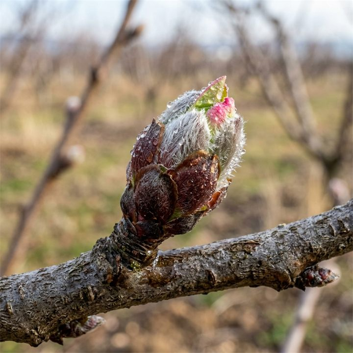
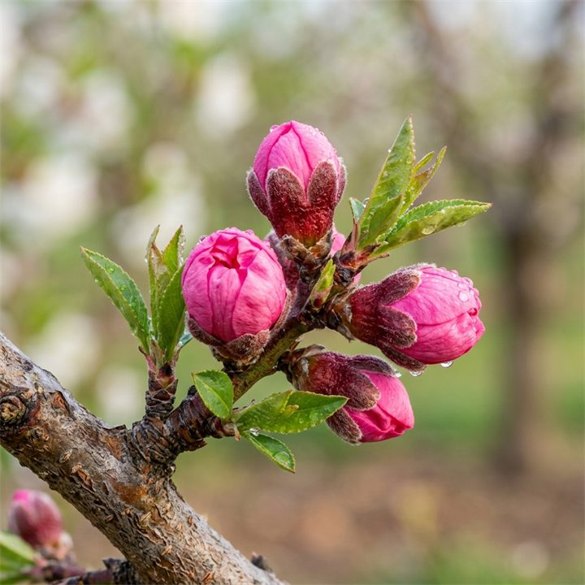
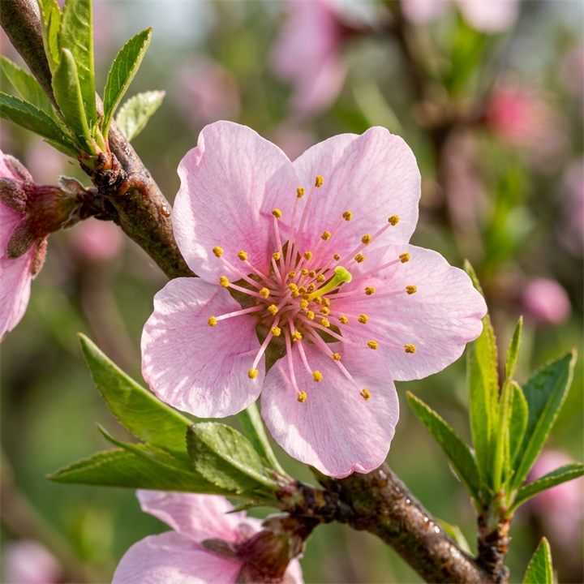
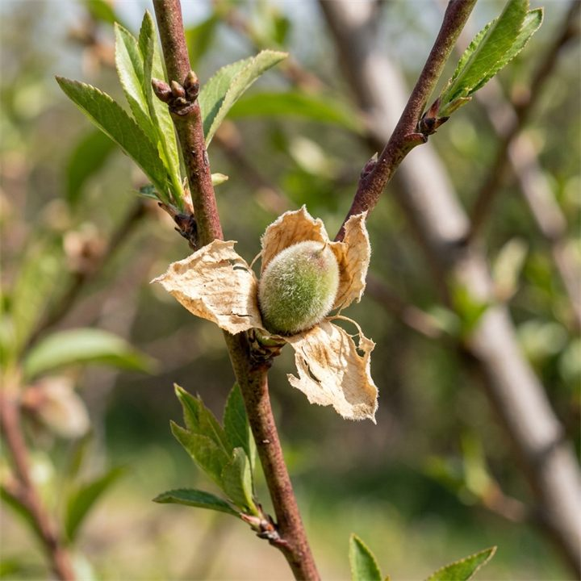
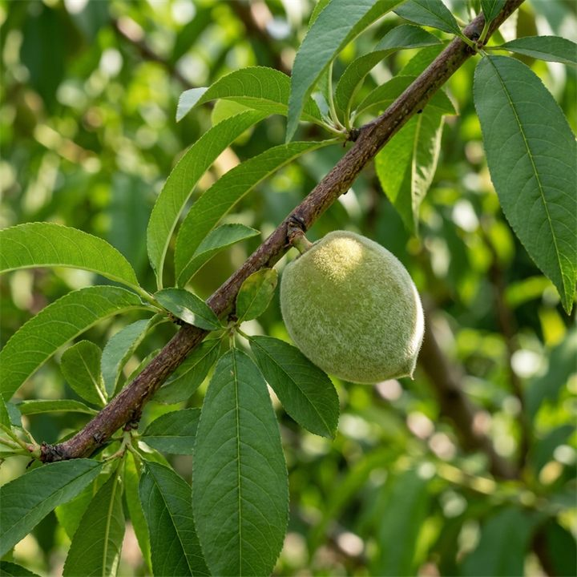
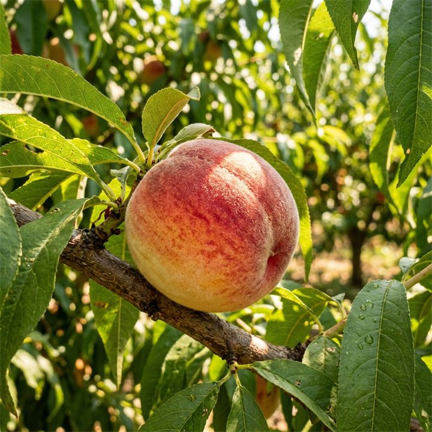
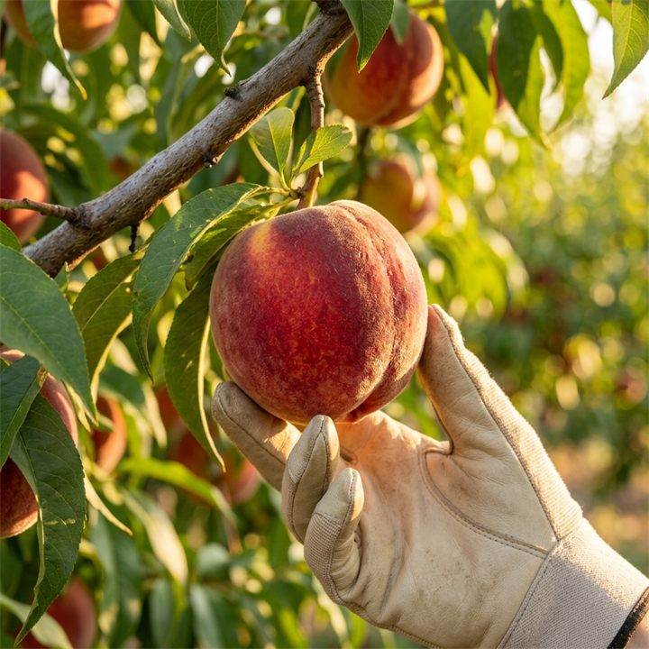

Hızlı İlaçlama Tankı Hesaplayıcısı
İlaçlama tankınızın kapasitesini girin, tablodaki tüm ürünlerin deponuz için gereken tam miktarları anında hesaplansın!
Litre
Görünüm Filtreleri

1. EVRE
Göz Kabarması / Kış Sonu
Erken İlkbahar / Mart Başı🛡️ Hastalık Yönetimi
Yaprak Kıvırcıklığı (Klok)
Etken: Bakır Hidroksit (%50)
Doz:
150 g / 100 L su
Depo için:
1500 g
🐛 Zararlı Yönetimi
Akarlar & Kabuklu Bitler
Etken: Mineral Yağ (Yazlık Yağ)
Doz:
1000 ml / 100 L su
Depo için:
10 L
🌱 Yaprak Besleme
Rezerv Çinko Takviyesi
Etken: Çinko (%15)
Doz:
200 ml / 100 L su
Depo için:
2000 ml

2. EVRE
Pembe Tomurcuk Dönemi
İlkbahar Ortası / Nisan Başı🛡️ Hastalık Yönetimi
Klok & Çiçek Monilyası
Etken: Dodine (Syllit 400 SC)
Doz:
100 ml / 100 L su
Depo için:
1000 ml
🐛 Zararlı Yönetimi
Şeftali Yaprak Biti
Etken: Acetamiprid (%20 SP)
Doz:
20 g / 100 L su
Depo için:
200 g
🌱 Yaprak Besleme
Bor + Çinko Sinerjisi
Etken: Bor (%10) + Çinko (%5)
Doz:
150 ml / 100 L su
Depo için:
1500 ml

3. EVRE
Tam Çiçeklenme Dönemi
İlkbahar / Nisan Ortası🛡️ Hastalık Yönetimi
Monilya Çiçek Çürüklüğü
Etken: Boscalid + Pyraclostrobin
Doz:
75 g / 100 L su
Depo için:
750 g
Kimyasal Uygulama Yapılmaz
Tozlaşma ve Faydalı Arı KorumaPolen yayan arı popülasyonunu korumak amacıyla çiçeklenme döneminde kimyasal ilaçlamadan kaçınılmalıdır.
FİZİKSEL / ORGANİK METOTLAR
🌱 Yaprak Besleme
Hücresel Güç & Deniz Yosunu
Etken: Serbest Amino Asitler
Doz:
100 ml / 100 L su
Depo için:
1000 ml

4. EVRE
Çanak Yaprak Dökümü / Tutum
İlkbahar Sonu / Mayıs Başı🛡️ Hastalık Yönetimi
Külleme & Yaprak Delen
Etken: Kresoxim-methyl
Doz:
20 g / 100 L su
Depo için:
200 g
🐛 Zararlı Yönetimi
Doğu Meyve Güvesi (1. Döl)
Etken: Chlorantraniliprole
Doz:
15 ml / 100 L su
Depo için:
150 ml
🌱 Yaprak Besleme
Kabuk Sertleştirici Kalsiyum
Etken: Ca (%15) + Bor (%0.5)
Doz:
300 ml / 100 L su
Depo için:
3000 ml

5. EVRE
Çekirdek Sertleşmesi / Büyüme
Yaz Başlangıcı / Mayıs Sonu-Haziran🛡️ Hastalık Yönetimi
Külleme Mücadelesi
Etken: Difenoconazole (Score SC)
Doz:
35 ml / 100 L su
Depo için:
350 ml
🐛 Zararlı Yönetimi
Kırmızı Örümcekler & Güve
Etken: Spirodiclofen (Envidor)
Doz:
30 ml / 100 L su
Depo için:
300 ml
🌱 Yaprak Besleme
Dengeli NPK Desteği (20-20-20)
Etken: Azot, Fosfor, Potasyum + ME
Doz:
200 g / 100 L su
Depo için:
2000 g

6. EVRE
Meyve Olgunlaşma / Renk
Yaz Ortası / Haziran Sonu-Temmuz🛡️ Hastalık Yönetimi
Meyve Çürüklüğü (Monilya)
Etken: Fenhexamid (Teldor SC)
Doz:
100 ml / 100 L su
Depo için:
1000 ml
🐛 Zararlı Yönetimi
Doğu Meyve Güvesi (Hasat Ö.)
Etken: Deltamethrin (Decis EC)
Doz:
30 ml / 100 L su
Depo için:
300 ml
🌱 Yaprak Besleme
Potasyum Hacim & Renk Tonu
Etken: Potasyum (%30) + Hümik Asit
Doz:
250 ml / 100 L su
Depo için:
2500 ml

7. EVRE
Hasat ve Toplama Dönemi
Yaz Sonu / Temmuz-Ağustos🛡️ Hastalık Yönetimi
Kimyasal Uygulama Yapılmaz
Sıfır Kalıntı & PHI GüvenliğiMeyve toplama aşamasında insan sağlığı ve pestisit kalıntısını sıfıra indirmek adına kimyasal koruma ilacı uygulanmaz.
GÜVENLİ HASAT SÜRESİ
Kimyasal Uygulama Yapılmaz
Tüketici Sağlığı KorumasıHasat anında veya hasattan hemen önceki günlerde böcek ve akar kontrolü için kimyasal ilaçlama kesinlikle yasaktır.
SIFIR PESTİSİT HEDEFİ
🌱 Yaprak Besleme
Hasat Sonrası Çinko-Bor (Rezerv)
Etken: Çinko (%15) + Bor (%10)
Doz:
200 ml / 100 L su
Depo için:
2000 ml
Tabloyu yatayda sürükleyerek veya kaydırarak tüm evreleri inceleyebilirsiniz.